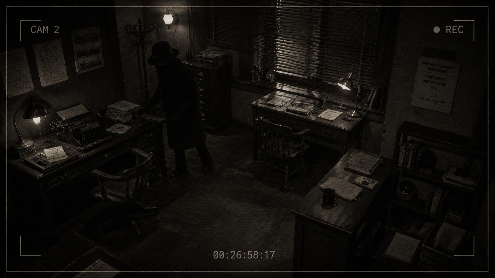
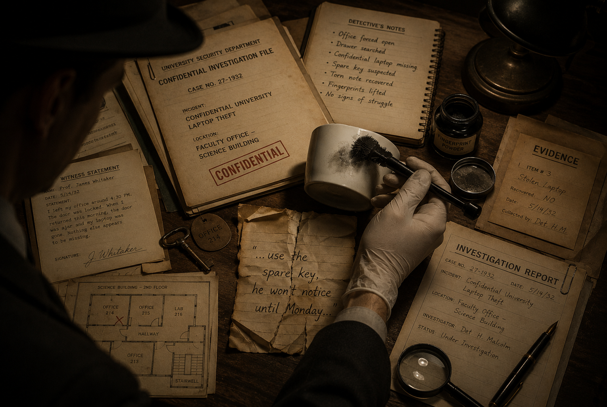
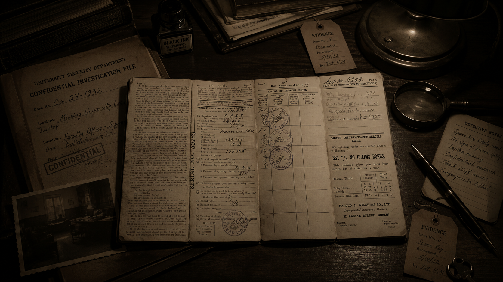
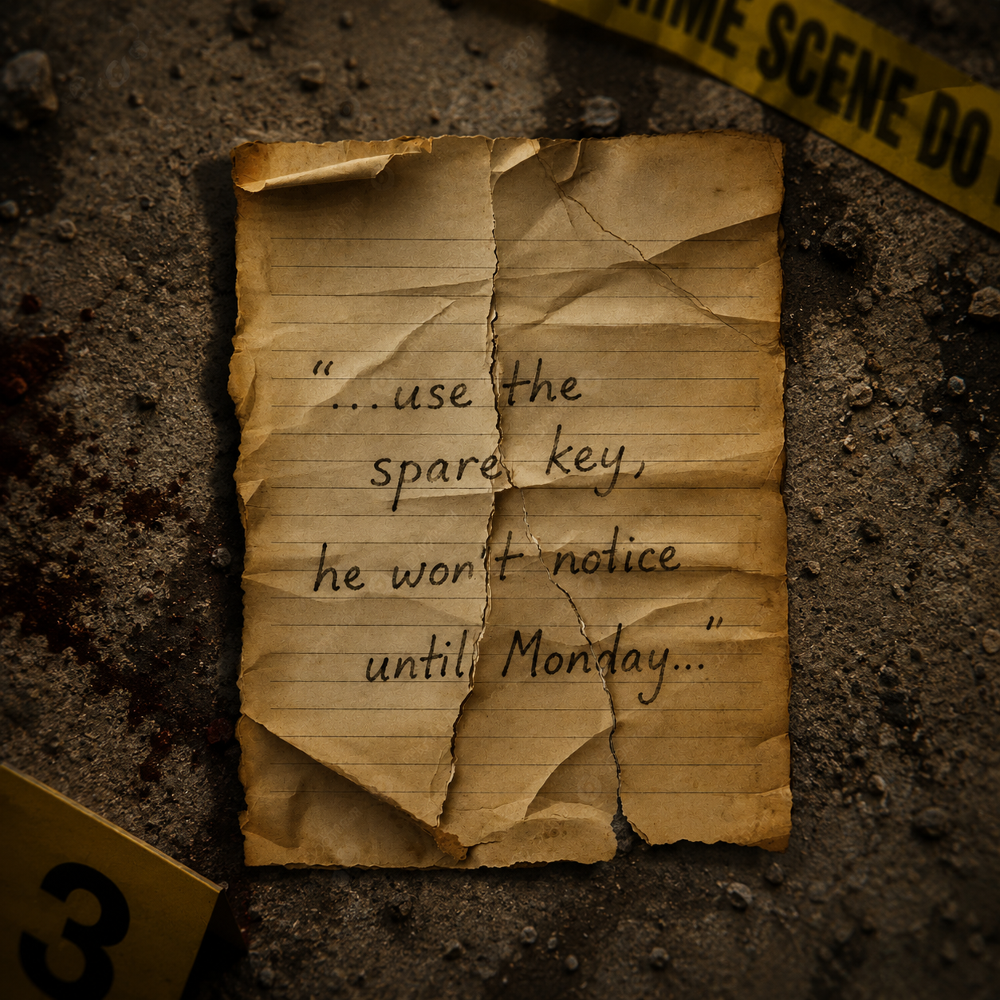
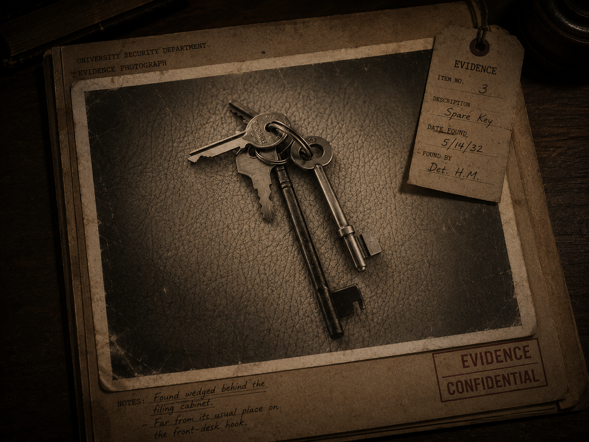

Security Camera Footage
A figure slips back into the building long after closing time.
It was just past 8 AM when Professor Owais unlocked his office door
and froze. His desk drawer hung open. His laptop bag sat empty on
the chair. The laptop itself, along with confidential university
records stored on it, was gone without a trace.
Building logs confirm only three people had access after hours
last night — and one of them is not telling the truth.
Five pieces of evidence remain at the scene, waiting to be
examined. Read every clue carefully, Detective. The truth is
in the details.

A figure slips back into the building long after closing time.

A single, still-warm cup sits beside the empty laptop bag.

The electronic door log tells a different story than the suspects do.

Half a handwritten note, torn and dropped near the filing cabinet.

A spare office key, dropped and forgotten behind the cabinet.
Pin a clue below to examine it up close.
Select a clue from the crime scene above to pin it to the board and read the detective's full notes.
Evidence you have inspected will be filed here.
No hints used.
⚠ Review all evidence carefully before making your accusation. Once you arrest a suspect, the case will be closed.